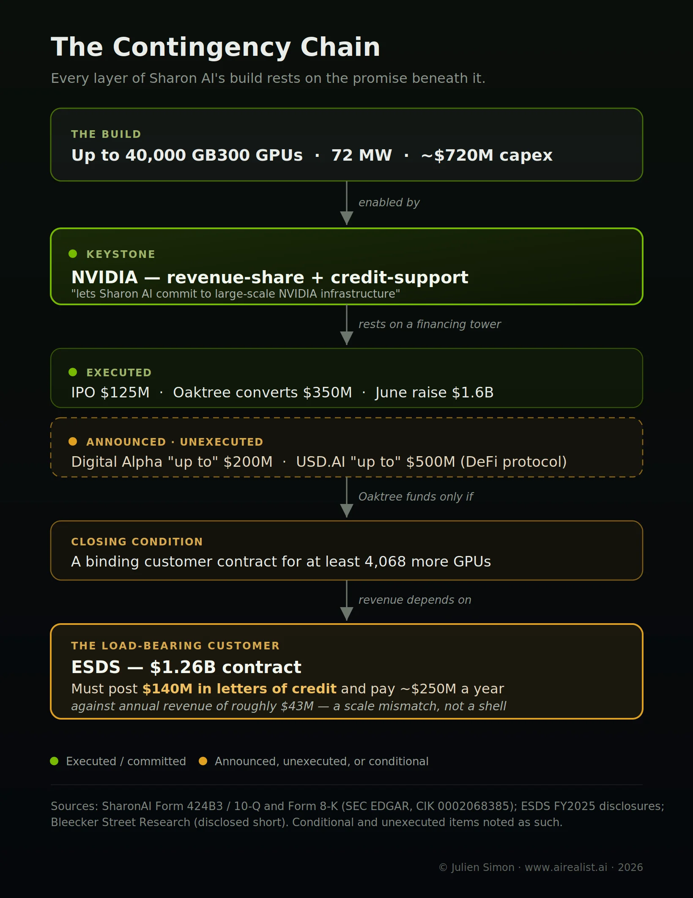

Ask why Nvidia took equity in the neoclouds it works with — CoreWeave, Nebius, even Firmus, its own revenue-share launch partner — and took none in Sharon AI, and the answer is in the instrument itself.
Start with what Nvidia does for the clouds that made it. CoreWeave has been public since March 2025; it carries more than $20 billion of debt and once looked reckless to venture investors, but it borrows against investment-grade, asset-backed paper — an $8.5 billion facility rated A3, secured by the chips and the customer contracts, at roughly SOFR plus 2.25 percent.[1] Nebius, the old Yandex reconstituted on Nasdaq, posted positive adjusted EBITDA in the first quarter of 2026, raised more than $6 billion this year, and ended the quarter with $9.3 billion in cash.[2] Both are anchored by hyperscalers whose contracts pay in advance: CoreWeave by Microsoft, Nebius by Meta and Microsoft, on deals worth tens of billions.[3] And into both, Nvidia put equity — $2 billion into CoreWeave in January, $2 billion into Nebius in March, the same instrument it used that season in Lumentum and Coherent.[4]
Equity is the tell. It is a bet on enterprise value: a junior claim that pays only if the company becomes worth something, which it has for these two. Nvidia takes equity where there is value to own. It did not offer Sharon AI equity, and it would not, because the thing a revenue-share does that equity cannot is sit senior to the shareholders, a claim on revenue paid off the top, ahead of a stake that may end up worthless. How Nvidia chooses to finance a cloud is a readout of what it thinks the cloud is worth. See value, and it buys in. See doubt, and it keeps its distance: a claim on the revenue, a loan to produce it, and no share of the company.
The counterparty side complicates the neat version. CoreWeave and Nebius fund their buildouts with investment-grade debt and hyperscaler prepayments, so they never needed Nvidia’s financing. Firmus and Sharon AI did take it, and Firmus is worth $5.5 billion, so a revenue share is not, by itself, a mark of distress. It is how a buildout gets financed quickly, as Nvidia’s own chief financial officer frames it: a way to serve companies with demand but who cannot secure financing quickly enough.[5] The instrument opens a new recurring revenue line for Nvidia. What separates the two who took it is whether Nvidia also wanted to own them.
The debt market already sorts AI borrowers by distance from cash: Amazon borrows unsecured, Oracle against backlog, SoftBank could not borrow against a private mark at all.[6] The revenue-share program is what sits below SoftBank’s rung, where the debt market says no and Nvidia says yes, through an instrument no bank would offer. It is a familiar move under a new name. An earlier piece called it the Overbuild Put: a company financing a buildout it might not fill names its own backstop, and the backstop is the giveaway.[7] Meta named its exit, a cloud business it might have to start if it overbuilt. Sharon AI’s exit is named for it, by Nvidia; the credit support is the backstop that lets a buildout proceed whose demand is unproven. The difference is who writes the text. Meta wrote one on its own capacity. Nvidia writes one on Sharon AI’s, the supplier backstopping the demand of a customer it also sells to.
The February COMECON piece argued Nvidia holds the independent cloud tier captive; Part 1 named the productized version.[8] The line is not equity versus revenue-share, since Firmus took both; it is ownership versus none. Nvidia holds a stake in CoreWeave, Nebius, and Firmus. In Sharon AI, it holds only a claim.
What “fragile enough to sign” looks like
Sharon AI is the exhibit, the one launch partner Nvidia financed but would not own. Firmus, the other, raised $505 million at a $5.5 billion valuation with Nvidia among its backers;[4] whatever else it is, it is not the bottom of the ladder. Sharon AI’s own filings tell most of the story before any short seller does.
At the end of March, the company held $164 million in cash and no revenue; its filings do not expect revenue to begin until September, and operating cash flow is negative, with a capital-expenditure requirement of about $720 million to support its lead contract.[9] Against the cash are two customer contracts totaling $1.26 billion and a second worth roughly $950 million.[10] Its reported quarterly loss of $20 million is mostly an accounting artifact: the company carries its convertible notes at fair value, so remeasuring them drove a $70 million loss through the income statement, offset by a $66 million gain on the sale of half of a Texas data-center joint venture.[11] A company whose reported profit swings with the value of its own debt and whose cash comes from an IPO and asset sales rather than operations is being valued on a chain of announcements, not cash flow. There is none yet.
The build is financed by a stack of commitments, each conditioned on the next. A $200 million facility from an investor called Digital Alpha and a $500 million facility from USD.AI, a roughly one-year-old decentralized-finance protocol, were both announced as “up to” and, per a short report, remained unexecuted months later.[12] In May, the company closed $350 million of convertible notes led by Oaktree. Per the same report, those notes were funded only if Sharon AI first signed a binding contract for at least 4,068 additional GPUs, its lender declining to treat the announced $1.26 billion in demand as sufficient collateral.[13] In June, it raised an additional $1.6 billion.[14] And on June 12 came the keystone, the six-year Nvidia deal, whose filing language says it is “structured so that Sharon AI can commit to large-scale NVIDIA infrastructure” through the revenue-share and credit-support.[15] Nvidia’s credit line is the piece that lets the rest of the tower stand.

Then the customer, where the short case overreaches, and the real point is sharper. Sharon AI’s forward revenue rests on the $1.26 billion contract with ESDS Software Solution, and ESDS is not a shell. It is an established Indian cloud provider with roughly ₹361 crore (about $43 million) in revenue last fiscal year, up 27 percent, profitable, lightly indebted, and preparing an IPO of its own.[16] The problem is scale, not solvency. The contract calls for average annual payments of roughly $250 million and $140 million in letters of credit; the annual figure alone is six times ESDS’s entire revenue.[17] A real $43 million company can be a real counterparty to a contract its own size; whether it can perform one thirty times larger is the open question, and it is the same question Sharon AI’s own lender asked. The chief executive brings his own history. Manning’s prior public company, Mawson Infrastructure Group, alleges in court filings that he directed roughly A$11.5 million to a shipping firm he controlled without disclosing his interest to the board, allegations he contests and that remain unadjudicated. That same firm, Flynt, is now a disclosed related-party vendor of Sharon AI, according to the company’s own prospectus.[18] None of this has stopped the stock, which has risen sharply; the market has not endorsed the short thesis.[19] But it is the profile of an operator that could not fund this build on ordinary terms, which is why the revenue-share was there to be signed.
One detail seals the instrument argument. Nvidia holds no equity in Sharon AI; its annual report called Nvidia a “strategic shareholder” and the company filed a correction stating Nvidia owns none.[20] It invested $2 billion in equity in each of CoreWeave and Nebius, and took a stake in Firmus, its own revenue-share partner. Only in Sharon AI did it take a revenue-share, a credit claim, and no ownership at all, because what it is underwriting here is not an asset it wants to hold. It is a demand that needs to be kept alive.
What comes next
The rule generalizes, and it is the thing to take from Sharon AI. When a supplier finances its own customer, the instrument it chooses is a private credit rating, better informed than the market’s, because the supplier sits inside the relationship. Equity is the vote of confidence. The revenue share is how the buildout gets paid for, and Firmus, worth $5.5 billion, took one too. What sets Sharon AI apart is the equity Nvidia declined to take. Call it the Instrument Test: read what a vendor takes, not what it announces. It travels beyond Nvidia: whenever a vendor lends to the customers who buy its product, the instrument encodes what the vendor privately believes, and usually before the tape does.
Which makes the program itself an indicator. Nvidia split its partners by what it was willing to own: it took a stake in CoreWeave, Nebius, and Firmus, and in Sharon AI it took only a claim. As the program spreads, watch which companies get a revenue share with no stake besides it. That pairing, not the revenue-share alone, is the readout of how far down the counterparty-quality curve Nvidia is reaching, and it moves before the market does, because it is Nvidia’s own hand showing. When the next partner arrives with a credit line and no equity cheque, Nvidia is saying, in the one language it cannot fake, that it is a company it will finance but will not own. And note the second edge. When a chip vendor’s credit support helps fund the purchase of its own chips and then collects a share of the revenue those chips generate, the revenue is partly its own money coming home — the same round-trip that ran at the hyperscaler layer, now reaching the bottom of the neocloud tier.[21]
A fair objection remains: a revenue-share cuts both ways. If an operator’s utilization falls, so does Nvidia’s cut, so this is exposure to Sharon AI’s success, not merely a claim on it. But exposure to the success of the operators least likely to deliver it is either deep conviction or the position of a supplier that has run out of stronger customers to sell to.
CoreWeave was fragile once, too, and became a company worth billions; one of these operators may do the same, and Oaktree and Goldman are betting on it. But read the instrument. In CoreWeave, Nebius, and Firmus, Nvidia is a shareholder, betting the company wins. In Sharon AI it is a creditor, arranging to be paid whether it wins or not. Which seat a supplier takes says more than any forecast it offers. And at the bottom of the ladder, Nvidia took the creditor’s.
Notes
[1] CoreWeave (Nasdaq: CRWV) listed March 28, 2025; total debt now exceeds $21 billion. Its March 2026 $8.5 billion facility is rated A3/A(low), secured by substantially all assets of the borrower group, at SOFR + 2.25% floating or ~5.9% fixed, maturing March 2032, and is the first investment-grade-rated GPU-backed financing:Sacra;Quartz. Its credit agreement requires contracts with “large and creditworthy” customers covering future debt repayments.
[2] Nebius Group (Nasdaq: NBIS), formerly Yandex N.V., resumed Nasdaq trading October 2024. Q1 2026: revenue $399M (+684% YoY); positive adjusted EBITDA (~45% AI-cloud margin) and net income of $621.2M (inclusive of non-operating items); more than $6 billion raised in 2026 ($4.3B convertible notes plus Nvidia’s equity), ending the quarter with $9.3B in cash:TIKR;Simply Wall St.
[3] CoreWeave’s anchor customer is Microsoft; Nebius holds a five-year ~$27B Meta agreement and a ~$17–19.4B Microsoft agreement, with hyperscaler prepayments helping fund capex:Forbes;Morningstar.
[4] Nvidia made a $2 billion private placement in CoreWeave in January 2026 (22,935,780 Class A shares at $87.20) as part of an expanded collaboration targeting more than 5 GW by 2030, and agreed to purchase CoreWeave’s unsold capacity through 2032:Sacra;Forbes. Its $2 billion equity investment in Nebius (March 11, 2026) mirrored $2 billion investments in Lumentum and Coherent the same month:MLQ News. Nvidia also holds equity in Firmus, having joined a 2025 round and participated in Firmus’s April 2026 US$505 million round at a US$5.5 billion valuation led by Coatue; the April participation was reported subject to closing conditions. Firmus separately arranged a US$10 billion debt facility. Verify against Firmus’s April 2026 funding release before publication.
[5] Nvidia CFO Colette Kress, framing the program as serving companies with demand that cannot secure financing quickly enough:NVIDIA blog, July 1, 2026.
[6] “Cash Flow Lends. Valuation Doesn’t.,” The AI Realist,June 12, 2026.
[7] “The Overbuild Put,” The AI Realist,June 1, 2026— reading a fallback-monetisation or backstop remark as a credit signal on a debt-financed buildout whose demand is unproven.
[8] “Jensen’s COMECON: How Nvidia Built an Empire of Captive Clouds,” The AI Realist,Feb. 14, 2026; “The Backstop Has a Name Now (Part 1),” The AI Realist, July 2026(confirm published slug before linking).
[9] SharonAI Holdings Inc., Form 10-Q for the quarter ended March 31, 2026 (cash $164,288,288; negative operating cash flow; revenue commencement not expected until approximately September 2026), attached to the Company’s Form 424B3,SEC EDGAR (CIK 0002068385). Approximately $720 million of capital expenditure is tied to the lead customer arrangement per the same filing.
[10] ESDS master services agreement of $1,260,000,000 and a second customer contract of approximately $950,000,000, per the Form 424B3 referenced in [9].
[11] Fair-value option elected on the convertible notes (Level 3); Q1 2026 included a $70.2 million loss on remeasurement and a $65,919,712 gain on the sale of a 50% interest in the Texas Critical Data Centers joint venture; convertible-note fair value of $199,358,226 as of March 31, 2026 (Form 424B3, [9]).
[12] Announcements of a Digital Alpha facility of up to $200 million (Jan. 19, 2026, subject to definitive documentation) and a USD.AI facility of up to $500 million (Jan. 22, 2026). Characterisations of USD.AI’s on-chain capacity and the unexecuted status of the Digital Alpha facility are fromBleecker Street Research, “SharonAI (SHAZ),” April 30, 2026(a short seller with a disclosed position).
[13]SharonAI Form 8-K, Exhibit 99.1 (closing of $350 million of convertible senior notes due 2031, led by Oaktree), May 2026, SEC EDGAR. The 4,068-GPU closing condition is as characterised in the Bleecker Street report ([12]); confirm against the note purchase agreement before publication.
[14] SharonAI’s oversubscribed $1.6 billion private placement (approximately $900 million equity and $700 million of 4.75% convertible notes due 2032), June 2026, with Goldman Sachs as lead placement agent:Benzinga.
[15] Six-year Nvidia collaboration (72 MW, up to 40,000 Grace Blackwell GB300), per the Company’s June 12, 2026 announcement reproduced in the Form 424B3 ([9]).
[16] ESDS Software Solution Limited, FY2025 (year ended March 31, 2025): total revenue ₹361 crore (~$43 million), up 27% year over year; profit before tax up nearly fourfold; debt-to-equity of 0.15 and current ratio of 2.32; DRHP filed March 30, 2025 for a ₹600 crore IPO on the BSE and NSE:unlistedzone;ESDS financials via WWIPL. Verify against ESDS’s audited DRHP financials before publication.
[17] The $250 million average annual payment and the $140 million letter-of-credit obligation are per the Bleecker Street report ([12]); confirm against the master services agreement before publication.
[18] Mawson Infrastructure Group Inc. (Nasdaq: MIGI) alleges, in its January 10, 2025 court filing, that James Manning, its former chief executive, caused the company to pay over A$11.4 million to Flynt International Cargo Solutions (a Vertua subsidiary) for services it “did not need,” without disclosing his interest or seeking board approval:Mawson Form 8-K, Exhibit 99.1, SEC EDGAR. The allegations are unadjudicated and contested. SharonAI’s own prospectus discloses Flynt ICS as a related-party vendor: “Flynt is a subsidiary of Vertua Limited and affiliated to the Group through common ownership by James Manning,” and the Group paid Flynt $167,638 in services expenses for the year ended December 31, 2024.
[19] Public market data as of early July 2026; SHAZ has risen sharply since the April 30 short report, and the market has not validated the short thesis.
[20] SharonAI corrected its FY2025 Form 10-K, which had described NVIDIA as a “strategic shareholder,” to state that NVIDIA holds no equity securities of the Company:SharonAI Form 8-K correction (SEC EDGAR).
[21] “The Round Trip,” The AI Realist,May 4, 2026.